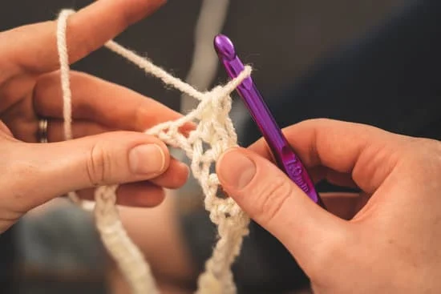

Sharing New Hobby
Tips for crochet for beginners


Even for the most experienced crocheter, creating something beautiful takes time. Do not rush your projects, and do not be afraid to take breaks. Holding a crochet hook and yarn for long periods of time can cause tension and pain—and in some cases, even carpal tunnel—so work in short time increments, especially as you are first getting started.

You can certainly pick up crocheting by yourself, but it can be extremely helpful to learn alongside others—no matter their level of experience. If you surround yourself with more knowledgeable crocheters, you can learn from their work and ask for their feedback. On the other hand, learning among other beginners can be helpful as well, as you work through new stitches and troubleshoot projects together.